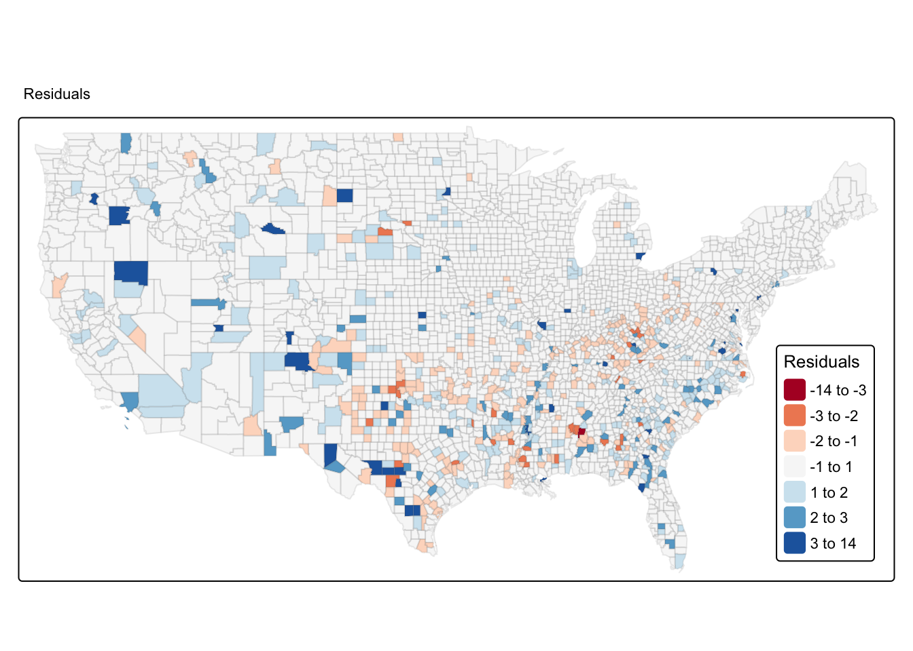

Chapter 9 Spatial regression models
9.1 Introduction
Last week we provided you with an introduction to regression analysis with R. The data we used had a spatial component. We were modelling the geographical distribution of homicide across US counties. However, we did not incorporate this spatial component into our models. As we have explained throughout the semester criminal events often cluster geographically in space. So if we want to develop a regression model for crime we may have to recognise this spatial component. Remember as well, from last week, that regression models assume independence between the observations. That is, a regression model is formally assuming that what happens in area Xi is not in any way related (it is independent) of what happens in area Xii. But if those two areas are adjacent in geographical space we know that there is a good chance that this assumption may be violated. In previous weeks we covered formal tests for spatial autocorrelation, which allow us to test whether this assumption is met or not. So before we fit a regression model with spatial data we need to explore the issue of autocorrelation. We already know how to do this. In this session, we will examine the data from last week, explore whether autocorrelation is an issue, and then introduce models that allow us to take into account spatial autocorrelation. We will see that there are two basic ways of adjusting for spatial autocorrelation: through a spatial lag model or through a spatial error model.
Before we do any of this, we need to load the libraries we will use today:
library(sf)
library(tmap)
library(ggplot2)
library(sp)
library(spdep)
library(spatialreg)
library(readr)
library(janitor)
library(dplyr)
library(gganimate)
library(lubridate)
# library(transformr) - this needs to be installed, but doesn't need loadingThen we will be using the ncovr data from last week. You can go back to last week’s learning materials to download from Blackboard.
Last week we did not treat the data as spatial and, consequently, relied on the .csv file. But notice that in the unzip ncovr file there is also a shapefile that we can load as a spatial object into R:
library(sf)
shp_name <- "data/ncovr/NAT.shp"
ncovr_sf <- st_read(shp_name)## Reading layer `NAT' from data source
## `/Users/reka/Desktop/crime_mapping_textbook/data/ncovr/NAT.shp'
## using driver `ESRI Shapefile'
## Simple feature collection with 3085 features and 69 fields
## Geometry type: MULTIPOLYGON
## Dimension: XY
## Bounding box: xmin: -124.7314 ymin: 24.95597 xmax: -66.96985 ymax: 49.37173
## Geodetic CRS: WGS 84We can indeed represent our variable of interest using a choropleth map.
library(tmap)
current_style <- tmap_style("col_blind")## tmap style set to "col_blind"## other available styles are: "white", "gray", "natural", "cobalt", "albatross", "beaver", "bw", "classic", "watercolor"tm_shape(ncovr_sf) +
tm_fill("HR90", title = "Homicide Rate (Quantiles)", style="quantile", palette = "Reds") +
tm_borders(alpha = 0.1) +
tm_layout(main.title = "Homicide Rate across US Counties, 1990", main.title.size = 0.7 ,
legend.position = c("right", "bottom"), legend.title.size = 0.8)
Do you think there is spatial patterning for homicide?
9.2 Looking at the residuals and testing for spatial autocorrelation in regression
Residuals, as we have explained last week, give you an idea of the distance between our observed Y values and the predicted Y values. So in essence they are deviations of observed reality from your model. Your regression line or hyperplane is optimised to be the one that best represents your data if those assumptions are met. Therefore, residuals are very helpful in diagnosing whether your model is a good representation of reality or not. Most diagnostics of the assumptions for OLS regression rely on exploring the residuals.
In order to explore the residuals we need to fit our model first. Let’s look at one of the models from last week.
9.2.1 Activity 1: A non-spatial regression on spatial data - listen to the residuals
So here is the function lm() which we learned all about last week (or refreshed about…!). Anyway, here we model homicide rate in the 1990s (HR90) using all 6 variables of interest, RD90- Resource Deprivation/Affluence, SOUTH - Counties in the southern region scored 1, DV90 divorce rate, MA90 the median age, PS90 - population structure, and UE90 unemployment. Let’s fit the model now:
fit_1 <- lm(HR90 ~ RD90 + SOUTH + DV90 + MA90 + PS90 + UE90, data=ncovr_sf)Now that we have fitted the model we can extract the residuals. If you look at the fit_1 object in your RStudio environment or if you run the str() function to look inside this object you will see that this object is a list with different elements, one of which is the residuals. An element of this object then includes the residual for each of your observations (the difference between the observed value and the value predicted by your model). We can extract the residuals using the residuals() function and add them to our spatial data set.
ncovr_sf$res_fit1 <- residuals(fit_1)If you now look at the dataset you will see that there is a new variable with the residuals. In those cases where the residual is negative this is telling us that the observed value is lower than the predicted (that is, our model is overpredicting the level of homicide for that observation) when the residual is positive the observed value is higher than the predicted (that is, our model is underpredicting the level of homicide for that observation).
We could also extract the predicted values if we wanted. We would use the fitted() function.
ncovr_sf$fitted_fit1 <- fitted(fit_1)Now look at the second county in the dataset. It has a homicide rate in 1990 of 15.88. This is the observed value. If we look at the new column we have created (“fitted_fit1”), our model predicts a homicide rate of 2.41. That is, knowing the level unemployment, whether the county is North or South, the level of resource deprivation, etc., we are predicting a homicide rate of 2.41. Now, this is lower than the observed value, so our model is underpredicting the level of homicide in this case. If you observed the residual you will see that it has a value of 13.46, which is simply the difference between the observed and the predicted value.
With spatial data one useful thing to do is to look at any spatial patterning in the distribution of the residuals. Notice that the residuals are the difference between the observed values for homicide and the predicted values for homicide, so you want your residual to NOT display any spatial patterning. If, on the other hand, your model displays a patterning in the areas of the study region where it predicts badly, then you may have a problem. This is telling you that your model is not a good representation of the social phenomena you are studying across the full study area: there is systematically more distortion in some areas than in others.
We are going to produce a choropleth map for the residuals, but we will use a common classification method we haven’t covered yet: standard deviations. Standard deviation is a statistical technique that is based on how much the data differs from the mean. First, you measure the mean and standard deviation for your data. Then, each standard deviation becomes a class in your choropleth maps.
In order to do that we will compute the mean and the standard deviation for the variable we want to plot and break the variable according to these values. The following code creates a new variable in which we will express the residuals in terms of standard deviations away from the mean. So, for each observation, we subtract the mean and divide by the standard deviation. Remember, this is exactly what the scale function does, which we have introduced in week 7:
ncovr_sf$sd_breaks <- scale(ncovr_sf$res_fit1)[,1] # because scale is made for matrices, we just need to get the first column using [,1]
# this is equal to (ncovr_sf$res_fit1 - mean(ncovr_sf$res_fit1)) / sd(ncovr_sf$res_fit1)
summary(ncovr_sf$sd_breaks)## Min. 1st Qu. Median Mean 3rd Qu. Max.
## -3.5370 -0.5238 -0.1404 0.0000 0.3314 13.7407Next we use a new style, fixed, within the tm_fill function. When we break the variable into classes using the fixed argument we need to specify the boundaries of the classes. We do this using the breaks argument. In this case we are going to ask R to create 7 classes based on standard deviations away from the mean. Remember that a value of 1 would be 1 standard deviation (s.d.) higher than the mean, and -1 would be one s.d. lower. If we assume normal distribution, then 68% of all counties should lie within the middle band from -1 to +1 s.d. (you can find a refresher of this on Wikipedia).
my_breaks <- c(-14,-3,-2,-1,1,2,3,14)
tm_shape(ncovr_sf) +
tm_fill("sd_breaks", title = "Residuals", style = "fixed", breaks = my_breaks, palette = "-RdBu") +
tm_borders(alpha = 0.1) +
tm_layout(main.title = "Residuals", main.title.size = 0.7 ,
legend.position = c("right", "bottom"), legend.title.size = 0.8)
Notice the spatial patterning of areas of over-prediction (negative residuals, or blue tones) and under-prediction (positive residuals, or brown tones). This visual inspection of the residuals is telling you that spatial autocorrelation may be present here. This, however, would require a more formal test.
9.2.2 Activity 2: Spatial autocorrelation (again)
Remember from week 7 that in order to do this first we need to turn our sf object into a sp class object and then create the spatial weight matrix. If the code below and what it does is not clear to you, revise the notes from week 7, when we first introduced it.
library(sp)
library(spdep)
#We coerce the sf object into a new sp object
ncovr_sp <- as(ncovr_sf, "Spatial")
#Then we create a list of neighbours using the Queen criteria
w <- poly2nb(ncovr_sp, row.names=ncovr_sp$FIPSNO)
summary(w)## Neighbour list object:
## Number of regions: 3085
## Number of nonzero links: 18168
## Percentage nonzero weights: 0.190896
## Average number of links: 5.889141
## Link number distribution:
##
## 1 2 3 4 5 6 7 8 9 10 11 13 14
## 24 36 91 281 620 1037 704 227 50 11 2 1 1
## 24 least connected regions:
## 53009 53029 25001 44005 36103 51840 51660 6041 51790 51820 51540 51560 6075 51580 51530 51131 51115 51770 51720 51690 51590 27031 26083 55029 with 1 link
## 1 most connected region:
## 49037 with 14 linksThis should give you an idea of the distribution of connectedness across the data, with counties having on average nearly 6 neighbours. Now we can generate the row-standardised spatial weight matrix and the Moran Scatterplot.
wm <- nb2mat(w, style='B')
rwm <- mat2listw(wm, style='W')We obtain the Moran’s test for regression residuals using the function lm.morantest() as below. It is important to realize that the Moran’s I test statistic for residual spatial autocorrelation takes into account the fact that the variable under consideration is a residual, computed from a regression. The usual Moran’s I test statistic does not. It is therefore incorrect to simply apply a Moran’s I test to the residuals from the regression without correcting for the fact that these are residuals.
lm.morantest(fit_1, rwm, alternative="two.sided")##
## Global Moran I for regression residuals
##
## data:
## model: lm(formula = HR90 ~ RD90 + SOUTH + DV90 + MA90 + PS90 + UE90,
## data = ncovr_sf)
## weights: rwm
##
## Moran I statistic standard deviate = 10.321, p-value < 2.2e-16
## alternative hypothesis: two.sided
## sample estimates:
## Observed Moran I Expectation Variance
## 0.1093062514 -0.0014498532 0.0001151682You will notice we obtain a statistically significant value for Moran’s I. The value of the Moran’s I test is not too high, but we still need to keep it in mind. If we diagnose that spatial autocorrelation is an issue, that is, that the errors (the residuals) are related systematically among themselves, then we have a problem and need to use a more appropriate approach: a spatial regression model.
9.3 What to do now?
If the test is significant (as in this case), then we possibly need to think of a more suitable model to represent our data: a spatial regression model. Remember spatial dependence means that (more typically) there will be areas of spatial clustering for the residuals in our regression model. So our predicted line (or hyperplane) will systematically under-predict or over-predict in areas that are close to each other. That’s not good. We want a better model that does not display any spatial clustering in the residuals.
There are two general ways of incorporating spatial dependence in a regression model, through what we called a spatial error model or by means of a spatially lagged model. There are spdep functions that provides us with some tools to help us make a decision as to which of these two is most appropriate: the Lagrange Multiplier tests.
The difference between these two models is both technical and conceptual. The spatial error model treats the spatial autocorrelation as a nuisance that needs to be dealt with. A spatial error model basically implies that the:
“spatial dependence observed in our data does not reflect a truly spatial process, but merely the geographical clustering of the sources of the behaviour of interest. For example, citizens in adjoining neighbourhoods may favour the same (political) candidate not because they talk to their neighbors, but because citizens with similar incomes tend to cluster geographically, and income also predicts vote choice. Such spatial dependence can be termed attributional dependence” (Darmofal, 2015: 4)
The spatially lagged model, on the other hand, incorporates spatial dependence explicitly by adding a “spatially lagged” variable y on the right hand side of our regression equation. Its distinctive characteristic is that it includes a spatially lagged “dependent” variable among the explanatory factors. It’s basically explicitly saying that the values of y in the neighbouring areas of observation n~i is an important predictor of y on each individual area n~i . This is one way of saying that the spatial dependence may be produced by a spatial process such as the diffusion of behaviour between neighboring units:
“If so the behaviour is likely to be highly social in nature, and understanding the interactions between interdependent units is critical to understanding the behaviour in question. For example, citizens may discuss politics across adjoining neighbours such that an increase in support for a candidate in one neighbourhood directly leads to an increase in support for the candidate in adjoining neighbourhoods” (Darmofal, 2015: 4)
9.4 Spatial Regimes
Before we proceed to a more detailed description of these two models it is important that we examine another aspect of our model that also links to geography. Remember that when we brought up our data into R, we decided to test for the presence of an interaction. We looked at whether the role of unemployment was different in Southern and Northern states. We found that this interaction was indeed significant. Unemployment had a more significant effect in Southern than in Northern states. This was particularly obvious during the 1970s, when unemployment did not affect homicide rates in the Northern states, but it did lead to a decrease in homicide in the Southern states.
We could have attempted to test other interaction effects between some of our other predictors and their geographical location in the South or the North. But we did not.
If you have read the Ballen et al. (2001) paper that we are replicating in the lab last week and this week, you will have noticed that they decided that they needed to run separate models for the South and the North. This kind of situation, where sub-regions seem to display different patterns is often alluded with the name of spatial regimes. In the context of regression analysis, spatial regimes relate to the possibility that we may need to split our data into two (or more) sub-regions in order to run our models, because we presume that the relationship of the predictors to the outcome may play out differently in these sub-regions (spatial regimes).
So how can we assess whether this is an issue in our data? As with many other diagnostics of regression, you may want to start by looking at your residuals.
9.4.1 Activity 3: Assessing spatial regimes using residuals
Look at the residual map we produced earlier. Do you think that the residuals look different in the South and in the North? If the pattern is not clear to you, you may want to run other forms of visualisation.
library(ggplot2)
ggplot(ncovr_sf, aes(x = res_fit1, colour = as.factor(SOUTH))) +
geom_density() 
What do you see in this plot? And, critically, what does it mean? What is this telling you about the predicted values that result from our model? (Remember what a residual is: the difference between the observed values and the predicted values).
There are formal tests that one can use to further explore these issues. The paper by Bollen et al. (2001) mentions them (Chow tests). But those are beyond the scope of this course. Sufficient to say that, as Bollen et al. (2001), we are going to split our analysis and run them separately for the Southern and the Northern states. We have covered the filter() function from dplyr to split datasets based on values of a variable. But to split sf objects it is better to rely on the more generic subset function, since filter() doesn’t accommodate well the column with the geographic information that sf provides.
ncovr_s_sf <- subset(ncovr_sf, SOUTH == 1)
ncovr_n_sf <- subset(ncovr_sf, SOUTH == 0)9.5 Lagrange multipliers
The Moran’s I test statistic has high power against a range of spatial alternatives. However, it does not provide much help in terms of which alternative model would be most appropriate. The Lagrange Multiplier test statistics do allow a distinction between spatial error models and spatial lag models.
In order to practice their computation and interpretation, let’s run two separate OLS regression models (one for the South and one for the North), using the same predictors as we used last week and, first, focusing on homicide in the northern counties in the 1990s. We have split the data in two, so that means that before we do this we need to create new files for the spatial weight matrix: in particular we will create one using first order queen criteria.
#We coerce the sf object into a new sp object
ncovr_n_sp <- as(ncovr_n_sf, "Spatial")
#Then we create a list of neighbours using the Queen criteria
w_n <- poly2nb(ncovr_n_sp, row.names=ncovr_n_sp$FIPSNO)
wm_n <- nb2mat(w_n, style='B')
rwm_n <- mat2listw(wm_n, style='W')
fit_2 <- lm(HR90 ~ RD90 + DV90 + MA90 + PS90 +UE90, data=ncovr_n_sf)First look at the Moran’s I.
lm.morantest(fit_2, rwm_n, alternative="two.sided")##
## Global Moran I for regression residuals
##
## data:
## model: lm(formula = HR90 ~ RD90 + DV90 + MA90 + PS90 + UE90, data =
## ncovr_n_sf)
## weights: rwm_n
##
## Moran I statistic standard deviate = 4.3371, p-value = 1.443e-05
## alternative hypothesis: two.sided
## sample estimates:
## Observed Moran I Expectation Variance
## 0.0617118442 -0.0020421389 0.0002160761The p (probability) value associated with this Moran’s I is below our standard threshold. So we will say that we have an issue with spatial autocorrelation that we need to deal with. OLS regression won’t do. In order to decide whether to fit a spatial error or a spatially lagged model we need to run the Lagrange Multipliers.
9.5.1 Activity 4: Lagrange multiplier tests
Both Lagrange multiplier tests (for the error and the lagged models, LMerr and LMlag respectively), as well as their robust forms (RLMerr and RLMLag, also respectively) are included in the lm.LMtests function. Again, a regression object and a spatial listw object must be passed as arguments. In addition, the tests must be specified as a character vector (the default is only LMerror), using the c( ) operator (concatenate), as illustrated below.
lm.LMtests(fit_2, rwm_n, test = c("LMerr","LMlag","RLMerr","RLMlag","SARMA"))##
## Lagrange multiplier diagnostics for spatial dependence
##
## data:
## model: lm(formula = HR90 ~ RD90 + DV90 + MA90 + PS90 + UE90, data =
## ncovr_n_sf)
## weights: rwm_n
##
## LMerr = 17.44, df = 1, p-value = 2.965e-05
##
##
## Lagrange multiplier diagnostics for spatial dependence
##
## data:
## model: lm(formula = HR90 ~ RD90 + DV90 + MA90 + PS90 + UE90, data =
## ncovr_n_sf)
## weights: rwm_n
##
## LMlag = 9.8255, df = 1, p-value = 0.001721
##
##
## Lagrange multiplier diagnostics for spatial dependence
##
## data:
## model: lm(formula = HR90 ~ RD90 + DV90 + MA90 + PS90 + UE90, data =
## ncovr_n_sf)
## weights: rwm_n
##
## RLMerr = 9.1435, df = 1, p-value = 0.002496
##
##
## Lagrange multiplier diagnostics for spatial dependence
##
## data:
## model: lm(formula = HR90 ~ RD90 + DV90 + MA90 + PS90 + UE90, data =
## ncovr_n_sf)
## weights: rwm_n
##
## RLMlag = 1.5288, df = 1, p-value = 0.2163
##
##
## Lagrange multiplier diagnostics for spatial dependence
##
## data:
## model: lm(formula = HR90 ~ RD90 + DV90 + MA90 + PS90 + UE90, data =
## ncovr_n_sf)
## weights: rwm_n
##
## SARMA = 18.969, df = 2, p-value = 7.602e-05How do we interpret the Lagrange Multipliers? First we look at the standard ones (LMerr and LMlag). If both are below the .05 level this means we need to have a look at the robust version of these tests (Robust LM).
If the non-robust version is not significant, the mathematical properties of the robust tests may not hold, so we don’t look at them in those scenarios. It is fairly common to find that both the lag (LMlag) and the error (LMerr) non-robust LM are significant. If only one of them are: problem solved. We would choose a spatial lag or a spatial error model according to this (i.e., if the lag LM was significant and the error LM was not we would run a spatial lag model or viceversa).
Here we see that the p-value for RLMlag is 0.2163, which means it is not significant. This should guide us to use the spatial error model.
What happens if both of these are significant? - if you look at the robust Lagrange multipliers (RLMlag and RLMerr) and encounter that both are significant Luc Anselin (2008: 199-200) proposes the following criteria:
“When both LM test statistics reject the null hypothesis, proceed to the bottom part of the graph and consider the Robust forms of the test statistics. Typically, only one of them will be significant, or one will be orders of magnitude more significant than the other (e.g., p < 0.00000 compared to p < 0.03). In that case the decision is simple: estimate the spatial regression model matching the (most) significant” robust “statistic. In the rare instance that both would be highly significant, go with the model with the largest value for the test statistic. However, in this situation, some caution is needed, since there may be other sources of misspecification. One obvious action to take is to consider the results for different spatial weight and/or change the basic (i.e., not the spatial part) specification of the model. there are also rare instances where neither of the Robust LM test statistics are significant. In those cases, more serious specification problems are likely present and those should be addressed first.”
By other specification errors Prof. Anselin refers to problems with some of the other assumptions of regression that we covered last week.
Now even though here we would run with the spatial error model, I want to show you both models and how to fit/interpret them, so we will demonstrate both!
9.6 Fitting and interpreting a spatially lagged model
Just to reiterate,the Lagrange Multiplier suggests this spatial lag test may not be appropriate, but that a spatial error test may be better. However, we can also make a theory-based argument for running this model. It may be the case that we believe that the values of \(y\) in one county, \(i\), are directly influenced by the values of \(y\) that exist in the “neighbours” of \(i\). This is an influence that goes beyond other explanatory variables that are specific to \(i\). Remember what we said earlier in the spatial lag model we are simply adding as an additional explanatory variable the values of y in the surrounding area. What we mean by “surrounding” will be defined by our spatial weight matrix. It’s important to emphasise that one has to think very carefully and explore appropriate definitions of “surrounding” (as we discussed, though just superficially, in the section on spatial clustering a few weeks ago). We are using here the first order queen criteria, but in real practice you would need to explore whether this is the best definition and one that makes theoretical sense.
9.6.1 Activity 5: Spatial lag model
Maximum Likelihood (ML) estimation of the spatial lag model is carried out with the lagsarlm() function. The required arguments are a regression “formula,” a data set and a listw spatial weights object. The default method uses Ord’s eigenvalue decomposition of the spatial weights matrix. This function lives in the spatialreg package.
library(spatialreg)
fit_2_lag <- lagsarlm(HR90 ~ RD90 + DV90 + MA90 + PS90 + UE90, data=ncovr_n_sf, rwm_n)
summary(fit_2_lag)##
## Call:
## lagsarlm(formula = HR90 ~ RD90 + DV90 + MA90 + PS90 + UE90, data = ncovr_n_sf,
## listw = rwm_n)
##
## Residuals:
## Min 1Q Median 3Q Max
## -11.92646 -1.98383 -0.69986 0.97484 68.01185
##
## Type: lag
## Coefficients: (asymptotic standard errors)
## Estimate Std. Error z value Pr(>|z|)
## (Intercept) 4.497161 1.153958 3.8972 9.733e-05
## RD90 2.774666 0.199905 13.8800 < 2.2e-16
## DV90 0.532917 0.056360 9.4556 < 2.2e-16
## MA90 -0.098468 0.029841 -3.2998 0.0009676
## PS90 0.933888 0.100593 9.2838 < 2.2e-16
## UE90 -0.079751 0.046792 -1.7044 0.0883131
##
## Rho: 0.1029, LR test value: 9.0515, p-value: 0.0026249
## Asymptotic standard error: 0.034564
## z-value: 2.9772, p-value: 0.0029093
## Wald statistic: 8.8635, p-value: 0.0029093
##
## Log likelihood: -4699.465 for lag model
## ML residual variance (sigma squared): 16.091, (sigma: 4.0113)
## Number of observations: 1673
## Number of parameters estimated: 8
## AIC: 9414.9, (AIC for lm: 9422)
## LM test for residual autocorrelation
## test value: 7.5881, p-value: 0.0058754As expected, the spatial autoregressive parameter (Rho) is statistically significant, as indicated by the p-value of 0.003 on an asymptotic t-test (based on the asymptotic variance matrix). The Likelihood Ratio test (LR) on this parameter is also significant (p value 0.003).
How do you interpret these results? First, you need to look at the general measures of fit of the model. I know what you are thinking. Look at the R Square and compare them, right? Well, don’t. This R Square is not a real R Square, but a pseudo-R Square and therefore is not comparable to the one we obtain from the OLS regression model. Instead we can look at the Akaike Information Criterion (AIC). We see that the lag model has an AIC of 9414.9 whereas the linear model with no lags has an AIC of 9422 (AIC for lm: 9422), so this is telling us there is a better fit when we include the spatial lag.
In our spatial lag model you will notice that there is a new term Rho. What is this? This is our spatial lag. It is a variable that measures the homicide rate in the counties that are defined as surrounding each county in our spatial weights matrix. We are simply using this variable as an additional explanatory variable to our model, so that we can appropriately take into account the spatial clustering detected by our Moran’s I test. You will notice that the estimated coefficient for this term is both positive and statistically significant. In other words, when the homicide rate in surrounding areas increases, so does the homicide rate in each county, even when we adjust for the other explanatory variables in our model. The fact the lag is significant adds further evidence that this is a better model than the OLS regression specification.
You also see at the bottom further tests for spatial dependence, a likelihood ratio test. This is not a test for residual spatial autocorrelation after we introduce our spatial lag. What you want is for this test to be significant because in essence it is further evidence that the spatial lag model is a good fit.
How about the coefficients? It may be tempting to look at the regression coefficients for the other explanatory variables for the original OLS model and compare them to those in the spatial lag model. But you should be careful when doing this. Their meaning now has changed:
“Interpreting the substantive effects of each predictor in a spatial lag model is much more complex than in a nonspatial model (or in a spatial error model) because of the presence of the spatial multiplier that links the independent variables to the dependent. In the nonspatial model, it does not matter which unit is experiencing the change on the independent variable. The effect” in the dependent variable “of a change” in the value of an independent variable “is constant across all observations” (Darmofal, 2015: 107).
Remember, when interpreting a regression coefficient for variable \(X~i\), we say that they indicate how much \(Y\) goes up or down for every one unit increase in \(X~i\) when holding all other variables in the model constant. In our example, for the nonspatial model this effect is the same for every county in our dataset. But in the spatial lag model things are not the same. We cannot interpret the regression coefficients for the substantive predictors in the same way because the “substantive effects of the independent variables vary by observation as a result of the different neighbors for each unit in the data” (Darmofal, 2015: 107).
In the OLS regression model, the coefficients for any of the explanatory variables measure the absolute impact of these variables. It is a simpler scenario. We look at the effect of X in Y within each county. So X in county A affects Y in county A. In the spatial lag model there are two components to how X affects Y. X affects Y within each county directly but remember we are also including the spatial lag, the measure of Y in the surrounding counties (call them B, C, and D). So our model includes the effect of X in county A in the level of Y in county A. By virtue of including the spatial lag (a measure of Y in county B, C and D) we are indirectly incorporating as well the effect that X has on Y in counties B, C, and D. So the effect of a covariate (independent variable) is the sum of two particular effects: a direct, local effect of the covariate in that unit, and an indirect, spillover effect due to the spatial lag.
In other words, in the spatial lag model, the coefficients only focus on the “short-run impact” of \(x~i\) on \(y~i\) , rather than the net effect. As Ward and Gleditsch (2008) explain “Since the value of \(y~i\) will influence the level of” homicide “in other” counties \(y~j\) and these \(y~j\) , in turn, feedback on to \(y~i\) , we need to take into account the additional effects that the short impact of \(x~i\) exerts on \(y~i\) through its impact on the level of" homicide “in other” counties. You can still read the coefficients in the same way but need to keep in mind that they are not measuring the net effect. Part of their effect will be captured by the spatial lag. Yet, you may still want to have a look at whether things change dramatically, particularly in terms of their significance (which is not the case in this example).
In sum, this implies that a change in the ith region’s predictor can affect the jth region’s outcome. We have 2 situations: (a) the direct impact of an observation’s predictor on its own outcome, and (b) the indirect impact of an observation’s neighbour’s predictor on its outcome.This leads to three quantities that we want to know:
- Average Direct Impact, which is similar to a traditional interpretation
- Average Total impact, which would be the total of direct and indirect impacts of a predictor on one’s outcome
- Average Indirect impact, which would be the average impact of one’s neighbours on one’s outcome
These quantities can be found using the impacts() function in the spatialreg library. This function performs the calculation of impacts for spatial lag, which is needed in order to interpret the regression coefficients correctly, because of the spillovers between the terms in these data generation processes
Impacts takes the argument of our model (fit_2_lag), as well as our spatial weights. Now we could specify our already existing spatial weights object rwm_n using the listw= parameter, however, we have a very large matrix, and this might mean our calculations will take all day (if you don’t believe me, try it! but don’t say I didn’t warn you!)
Instead, what we can do is follow the example that converts the spatial weight matrix into a “sparse” matrix, and power it up using the trW() function. This follows the approximation methods described in Lesage and Pace, 2009. It prepares a vector of traces of powers of a spatial weights matrix Here, we use Monte Carlo simulation to obtain simulated distributions of the various impacts. If we use this, our outcome will be much faster. The trW() function needs our spatial weights to be in a sparse matrix class object, so we can transform this using the as() function:
W <- as(rwm_n, "CsparseMatrix")
trMC <- trW(W, type="MC")Finally, R= asks for the number of simulations used to compute the distribution for the impact measures.
im<-impacts(fit_2_lag, tr = trMC, R=100)
sums<-summary(im, zstats=T)
data.frame(sums$res)## direct indirect total
## 1 2.78000997 0.312926477 3.09293644
## 2 0.53394329 0.060102299 0.59404559
## 3 -0.09865771 -0.011105216 -0.10976293
## 4 0.93568704 0.105323812 1.04101085
## 5 -0.07990449 -0.008994295 -0.08889878#To print the p values
data.frame(sums$pzmat)## Direct Indirect Total
## RD90 0.000000000 0.004402578 0.000000000
## DV90 0.000000000 0.003655513 0.000000000
## MA90 0.003623684 0.059391980 0.004282742
## PS90 0.000000000 0.004631352 0.000000000
## UE90 0.127424906 0.235831583 0.134232336We see that all the variables have significant direct, indirect and total effects. You may want to have a look at how things differ when you just run a non spatial model.
fit_1_OLS <- lm(HR90 ~ RD90 + DV90 + MA90 + PS90 +UE90, data=ncovr_n_sf)
summary(fit_1_OLS)##
## Call:
## lm(formula = HR90 ~ RD90 + DV90 + MA90 + PS90 + UE90, data = ncovr_n_sf)
##
## Residuals:
## Min 1Q Median 3Q Max
## -12.410 -2.025 -0.714 1.046 67.793
##
## Coefficients:
## Estimate Std. Error t value Pr(>|t|)
## (Intercept) 4.91322 1.15953 4.237 2.39e-05 ***
## RD90 2.83090 0.19971 14.175 < 2e-16 ***
## DV90 0.56374 0.05554 10.151 < 2e-16 ***
## MA90 -0.10623 0.03000 -3.541 0.00041 ***
## PS90 0.96744 0.10056 9.621 < 2e-16 ***
## UE90 -0.07804 0.04693 -1.663 0.09656 .
## ---
## Signif. codes: 0 '***' 0.001 '**' 0.01 '*' 0.05 '.' 0.1 ' ' 1
##
## Residual standard error: 4.033 on 1667 degrees of freedom
## Multiple R-squared: 0.2594, Adjusted R-squared: 0.2572
## F-statistic: 116.8 on 5 and 1667 DF, p-value: < 2.2e-169.7 Fitting an interpreting a spatial error model
We saw (well you should have seen!) that for the case of homicide in the 90s for Southern states the spatial error model was more appropriate when using the 1 st order contiguity queen criteria. In this case then, we need to run a spatial error model.
The spatial lag model is probably the most common specification and maybe the most generally useful way to think about spatial dependence. But we can also enter the spatial dependence, as we mentioned through the error term in our regression equation. Whereas the spatial lag model sees the spatial dependence as substantively meaningful (in that y, say homicide, in county i is influenced by homicide in its neighbours), the spatial error model simply treats the spatial dependence as a nuisance.
This model focuses on estimating the regression parameters for the explanatory variables of interest and disregards the possibility that the spatial clustering, the spatial autocorrelation, may reflect something meaningful (other than attributional dependence as explained earlier). So instead of assuming that a spatial lag influences the dependent variable we estimate a model that relaxes the standard regression model assumption about the need for the errors to be independent. It’s beyond the scope of this introductory course to cover the mathematical details of this procedure, though you can use the suggested reading (particularly the highly accessible Ward and Gleditsch,2008, book or the more recent Darmofal, 2015) or some of the video lectures in the matter that are available in the GeoDa website.
9.7.1 Activity 6: Spatial error model
Maximum likelihood estimation of the spatial error model is similar to the lag procedure and implemented in the errorsarlm() function. Again, the formula, data set and a listw spatial weights object must be specified, as illustrated below.
#We coerce the sf object into a new sp object
ncovr_s_sp <- as(ncovr_s_sf, "Spatial")
#Then we create a list of neighbours using the Queen criteria
w_s <- poly2nb(ncovr_s_sp, row.names=ncovr_s_sp$FIPSNO)
wm_s <- nb2mat(w_s, style='B')
rwm_s <- mat2listw(wm_s, style='W')
fit_3_err <- errorsarlm(HR90 ~ RD90 + DV90 + MA90 + PS90 + UE90, data=ncovr_s_sf, rwm_s)
summary(fit_3_err)##
## Call:errorsarlm(formula = HR90 ~ RD90 + DV90 + MA90 + PS90 + UE90,
## data = ncovr_s_sf, listw = rwm_s)
##
## Residuals:
## Min 1Q Median 3Q Max
## -18.12072 -3.47386 -0.65447 2.47020 41.88765
##
## Type: error
## Coefficients: (asymptotic standard errors)
## Estimate Std. Error z value Pr(>|z|)
## (Intercept) 6.518272 1.963848 3.3191 0.000903
## RD90 4.395116 0.238312 18.4427 < 2.2e-16
## DV90 0.492009 0.125188 3.9302 8.489e-05
## MA90 -0.011567 0.053045 -0.2181 0.827379
## PS90 1.763051 0.225642 7.8135 5.551e-15
## UE90 -0.380113 0.078674 -4.8315 1.355e-06
##
## Lambda: 0.29815, LR test value: 51.977, p-value: 5.6166e-13
## Asymptotic standard error: 0.037839
## z-value: 7.8794, p-value: 3.3307e-15
## Wald statistic: 62.086, p-value: 3.3307e-15
##
## Log likelihood: -4471.384 for error model
## ML residual variance (sigma squared): 32.409, (sigma: 5.6929)
## Number of observations: 1412
## Number of parameters estimated: 8
## AIC: 8958.8, (AIC for lm: 9008.7)As before the AIC is better for the spatial model (8958.8) than for the non spatial model (9008.7). In this case, you can compare the regression coefficients with those from the OLS model, since we don’t have a spatial lag capturing some of their effect. Notice how one of the most notable differences is the fact that unemployment nearly halves its impact in the new model. You will see the table includes a new parameter (lambda) but you don’t need to worry about this for the purpose of this course. It is something you would understand if you get into the mathematical estimation details.
We have reached a point now where you are able to model spatial dependence. How exciting! No longer will you be using OLS models for your data with spatial elements, as now, finally we have learned how to account for Tobler’s first law: (I imagine this all said together in chorus by this point…!!) everything is related to everything else, but near things are more related to each other than far away things! Remember - most of what you study as criminologists takes place in a particular place in a particular time. Now we haven’t covered time in this module, but you can sure account for the space component now. Well done all!
Now I said we don’t deal with time, but I cannot let you go without addressing this just a little tiny bit… So one more section to go!
9.8 Time matters!
All crimes occur at a specific date and time, however such definite temporal information is only available when victims or witnesses are present, alarms are triggered, etc., at the time of occurrence. This specific temporal data is most often collected in crimes against persons. In these cases, cross-tabulations or histogram of weekday and hour by count will suffice. The great majority of reported events are crimes against property. In these cases, there are seldom victims or witnesses present. These events present the analyst with ‘ranged’ temporal data, that is, an event reported as occurring over a range of hours or even days. In the case of ranged temporal data, analysis is possible through use of equal chance or probability methods. If an event was reported as having occurred from Monday to Tuesday, in the absence of evidence to the contrary, it is assumed the event had an equal chance or probability of occurring on each of the two days, or .5 (%50). In the same manner, if an event was reported as having occurred over a 10 hour span there is a 10% chance the event occurred during any one of the hours. This technique requires a reasonable number of events in the data set to be effective. The resulting probabilities are totalled in each category and graphed or cross-tabulated. This produces a comparison of relative frequency, by weekday or hour source.
Temporal crime analysis looks at trends in crime or incidents. A crime or incident trend is a broad direction or pattern that specific types or general crime and/or incidents are following.
Three types of trend can be identified:
- overall trend – highlights if the problem is getting worse, better or staying the same over a period of time
- seasonal, monthly, weekly or daily cycles of offences – identified by comparing previous time periods with the same period being analysed
- random fluctuations – caused by a large number of minor influences, or a one-off event, and can include displacement of crime from neighbouring areas due to partnership activity or crime initiatives.
Decomposing these trends is an important part of what time series analysis is all about. This could be a whole other course (and it is, there are modules on this for example in the Economics department!) so we will not cover it here. HOWEVER, I will show you one super cool way to introduce time into your crime mapping practice. We’ll try two things: small multiples, and animations.
9.8.1 Activity 7: Small multiples
One way that we can represent change over time in our spatial data is to create small multiples of the same map. Faceting and small multiples is a format for comparing the geographical distribution of different social phenomena. For this session we will be using the spatial object of ASB in Manchester between 2016-2017 (manchester_asb.csv) which you can download from Blackboard.
library(readr)
library(janitor)
mcr_asb <- read_csv("data/manchester_asb.csv") %>% clean_names()## New names:
## * `` -> ...1## Rows: 32162 Columns: 15## ── Column specification ────────────────────────────────────────────────────────
## Delimiter: ","
## chr (8): Month, Reported.by, Falls.within, Location, LSOA.code, LSOA.name, C...
## dbl (4): ...1, X, Longitude, Latitude
## lgl (3): Crime.ID, Last.outcome.category, Context##
## ℹ Use `spec()` to retrieve the full column specification for this data.
## ℹ Specify the column types or set `show_col_types = FALSE` to quiet this message.We’ll also need our boundary data. Read in the city centre LSOAs geojson (also on Blackboard) cc_lsoas.geojson.
cc_lsoas <- st_read("data/cc_lsoas.geojson")## Reading layer `cc_lsoas' from data source
## `/Users/reka/Desktop/crime_mapping_textbook/data/cc_lsoas.geojson'
## using driver `GeoJSON'
## Simple feature collection with 23 features and 3 fields
## Geometry type: POLYGON
## Dimension: XY
## Bounding box: xmin: -2.265664 ymin: 53.46601 xmax: -2.20089 ymax: 53.50136
## Geodetic CRS: WGS 84Create a frequency table of the number of ASB incidents by month and by LSOA, and select only the city centre LSOAs.
library(dplyr)
asb_by_lsoa <- mcr_asb %>%
group_by(lsoa_code, month) %>%
count() %>%
filter(lsoa_code %in% cc_lsoas$code)Now you might notice that there should be 13 months in the data set (from 05-2016 to 05-2017), however, the number of resulting rows is not 23*13 (), but instead 289. This indicates that we have some missing observations. There are months when there were no ASBs in some of our areas, but here that is just an absence of recorded data, rather than a recorded value of 0.
To fix this, we can identify the LSOAs and the missing months by selecting those where we have fewer than 13 observations:
asb_by_lsoa %>% group_by(lsoa_code) %>% count() %>% filter(n < 13) %>% pull(lsoa_code)## [1] "E01033673" "E01033684"There are two such LSOAs here. Let’s see which months we have data or for each.
asb_by_lsoa %>%
filter(lsoa_code %in% c("E01033673", "E01033684") ) %>%
group_by(lsoa_code, month) %>% count() ## # A tibble: 16 x 3
## # Groups: lsoa_code, month [16]
## lsoa_code month n
## <chr> <chr> <int>
## 1 E01033673 2016-05 1
## 2 E01033673 2016-06 1
## 3 E01033673 2016-07 1
## 4 E01033673 2016-08 1
## 5 E01033673 2016-09 1
## 6 E01033673 2016-10 1
## 7 E01033673 2016-11 1
## 8 E01033673 2017-01 1
## 9 E01033673 2017-02 1
## 10 E01033673 2017-03 1
## 11 E01033673 2017-04 1
## 12 E01033684 2016-05 1
## 13 E01033684 2016-07 1
## 14 E01033684 2016-10 1
## 15 E01033684 2016-12 1
## 16 E01033684 2017-04 1Looks like LSOA E01033673 is missing 2016-12 and 2017-05, while LSOA E01033684 is missing 2016-06, 2016-08, 2016-09, 2016-11, 2017-01, 2017-02, 2017-03, and 2017-05. Let’s create a dataframe where we have for each observation each of these missing months for the LSOAs, and an n of 0, as these months we know there were 0 stop and searches:
missing_months <- data.frame(lsoa_code = c("E01033673", "E01033673", "E01033684", "E01033684", "E01033684", "E01033684", "E01033684", "E01033684", "E01033684", "E01033684"),
month = c("2016-12", "2017-05", "2016-06", "2016-08", "2016-09", "2016-11", "2017-01", "2017-02", "2017-03", "2017-05"),
n = c(0,0,0,0,0,0,0,0,0,0) )And bind this to our existing dataframe with rbind():
asb_by_lsoa <- rbind(asb_by_lsoa, missing_months)Now we see we have the required 299 observations!
We can now join this to our cc_lsoas boundary file.
cc_lsoas_asb <- left_join(cc_lsoas, asb_by_lsoa, by = c("code" = "lsoa_code"))Let’s also make sure that any NAs are replaced by 0s (if you’re unsure here, watch the feedback session video for week 4!)
cc_lsoas_asb %>%
mutate(n = ifelse(is.na(n), 0, n))## Simple feature collection with 299 features and 5 fields
## Geometry type: POLYGON
## Dimension: XY
## Bounding box: xmin: -2.265664 ymin: 53.46601 xmax: -2.20089 ymax: 53.50136
## Geodetic CRS: WGS 84
## First 10 features:
## label name code month n
## 1 E08000003E02001062E01005066 Manchester 018E E01005066 2016-05 1
## 2 E08000003E02001062E01005066 Manchester 018E E01005066 2016-06 5
## 3 E08000003E02001062E01005066 Manchester 018E E01005066 2016-07 4
## 4 E08000003E02001062E01005066 Manchester 018E E01005066 2016-08 4
## 5 E08000003E02001062E01005066 Manchester 018E E01005066 2016-09 2
## 6 E08000003E02001062E01005066 Manchester 018E E01005066 2016-10 5
## 7 E08000003E02001062E01005066 Manchester 018E E01005066 2016-11 7
## 8 E08000003E02001062E01005066 Manchester 018E E01005066 2016-12 3
## 9 E08000003E02001062E01005066 Manchester 018E E01005066 2017-01 3
## 10 E08000003E02001062E01005066 Manchester 018E E01005066 2017-02 7
## geometry
## 1 POLYGON ((-2.229713 53.4734...
## 2 POLYGON ((-2.229713 53.4734...
## 3 POLYGON ((-2.229713 53.4734...
## 4 POLYGON ((-2.229713 53.4734...
## 5 POLYGON ((-2.229713 53.4734...
## 6 POLYGON ((-2.229713 53.4734...
## 7 POLYGON ((-2.229713 53.4734...
## 8 POLYGON ((-2.229713 53.4734...
## 9 POLYGON ((-2.229713 53.4734...
## 10 POLYGON ((-2.229713 53.4734...We now have a simple features object which has in the attribute tables the number of ASB incidents (n) for each LSOA for each month in our data set. We can use the function tm_facets() from the tmap package to now try to produce the small multiples:
tm_shape(cc_lsoas_asb) +
tm_fill("n") +
tm_borders() +
tm_facets("month", free.coords=FALSE)We can now see how ASB varies across the months, and start to think about how this might change over seasons for example with seasonal patterns in routine activities!
PS: you can also use the facet_wrap() and facet_grid() functions in ggplot2 package if you prefer - remember there are always many ways to solve the same problem in R!
Pretty cool though, eh? Well just wait until the next section…!
9.8.2 Activity 8: Animations
You want a data viz person to get excited? Mention animations! Now they are brought to ggplot2 thanks to the gganimate extension.
So first thing we do is to load the gganimate package:
library(gganimate)Also, to apply gganimate to sf objects, you need to have a package called transformr installed. You don’t need to load this, but make sure it’s installed!
Then, we need to make sure that our temporal variable is a date object. We can use the ymd() function, from the fantastic lubridate package (really I cannot praise this package enough, it makes handling dates so easy…!) to make sure that our Month variable is a date object.
But we have no day you say! Only month! How can we use ymd() which clearly requires year month ad day! Well, one approach is to make this up, and just say that everything in our data happened on the 1st of the month. We can use the paste0() function to do this:
library(lubridate)
cc_lsoas_asb$date_month <- ymd(paste0(cc_lsoas_asb$month, "-01"))Now, we can create a simple static plot, the way we already know how. Let’s plot the number of ASB incidents per LSOA, and save this in an object called anim:
anim <- ggplot() +
geom_sf(data = cc_lsoas_asb, aes(fill = n))Now, finally, we can animate this graph. Take the object of the static graph (anim) and add a form of transition, which will be used to animate the graph. In this case, we can use transition_states(). This transition splits your data into multiple states based on the levels in a given column, much like how faceting splits up the data in multiple panels. It then shifts between the defined states and pauses at each state. Layers with data without the specified column will be kept constant during the animation (again, mimicking facet_wrap). States are the unquoted name of the column holding the state levels in the data. You can then use the closest_state to dynamically label the graph:
anim + transition_states(date_month, transition_length = 1, state_length = 1) +
labs(title = "Month: {closest_state}")
How cool is that!?
You can now make animations about transition over time to impress your friends, family, future employers, and so on. What a way to end this course!
9.9 Recap
Today we learned a lot! We finally reached the conclusion of our spatial analysis by applying spatial weights in order to account for dependence in our spatially explicit data. Specifically we explored how to do the following:
- we looked at how to look for spatial autocorrelation in our residuals.
- we explores spatial lag and spatial error models, and using Lagrange Multiplier tests to decide when to use which one
- we looked at interpreting the outputs from our spatial regression models, and how they differ from the non-spatial versions.
- finally we looked at two ways for accounting for time in our crime mapping activities, first by using small multiples and second through animations.